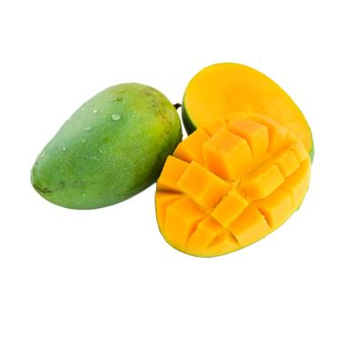

tentangbuah.com - Mangga
Mangga

Buah Mangga termasuk kelompok buah batu (drupa)
yang berdaging, dengan ukuran dan bentuk yang sangat berubah-ubah
bergantung pada macamnya, mulai dari bulat (misalnya mangga gedong),
bulat telur (gadung, indramayu, arumanis) hingga lonjong memanjang
(mangga golek). Panjang buah kira-kira 2,5–30 cm. Pada bagian ujung
buah, ada bagian yang runcing yang disebut paruh. Di atas paruh ada
bagian yang membengkok yang disebut sinus, yang dilanjutkan ke
bagian perut.
Kulit buah agak tebal berbintik-bintik kelenjar; hijau, kekuningan
atau kemerahan bila masak. Daging buah jika masak berwarna merah
jingga, kuning atau krem, berserabut atau tidak, manis sampai masam
dengan banyak air dan berbau kuat sampai lemah. Biji berwarna putih,
gepeng memanjang tertutup endokarp yang tebal, mengayu dan berserat.
Biji ini terdiri dari dua keping; ada yang monoembrional dan ada
pula yang poliembrional
Asal Mangga berasal dari daerah di sekitar
perbatasan India dengan Burma, dan mangga telah menyebar ke Asia
Tenggara sekurang-kurangnya semenjak 1500 tahun yang silam. Buah ini
dikenal pula dalam berbagai bahasa daerah, seperti pelem atau poh
Khasiat Mangga
- Membersihkan kulit wajah
- Mengontrol gula darah
- Melancarkan pencernaan
- Menjaga daya tahan tubuh
- Menurunkan berat badan
- Pilihan camilan sehat
Daftar harga
| Jenis Mangga | Harga | |
|---|---|---|
| Per Kilo | Per Biji | |
| Mangga Manalagi | 50.000 | 5.000 |
| Mangga Gadung | 60.000 | 6.000 |
| Mangga Arumanis | 70.000 | 7.000 |
| Mangga Golek | 55.000 | 5.500 |